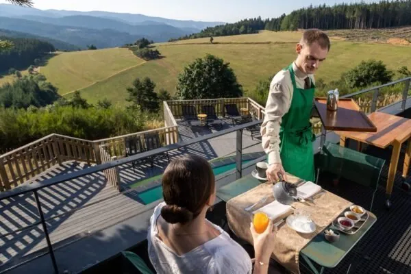
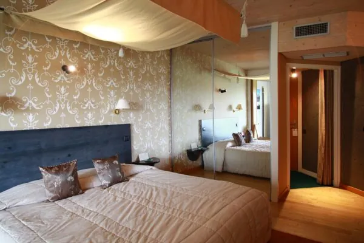
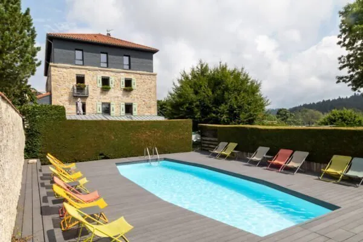
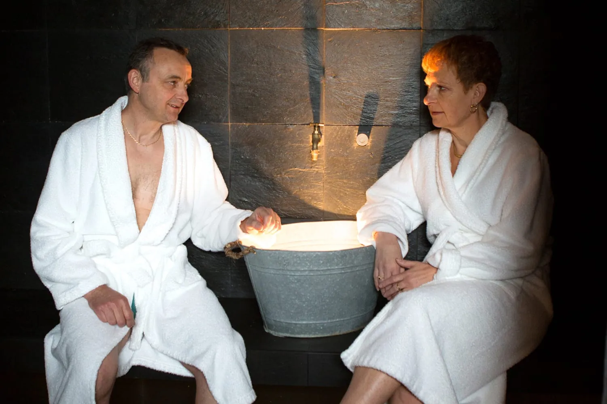
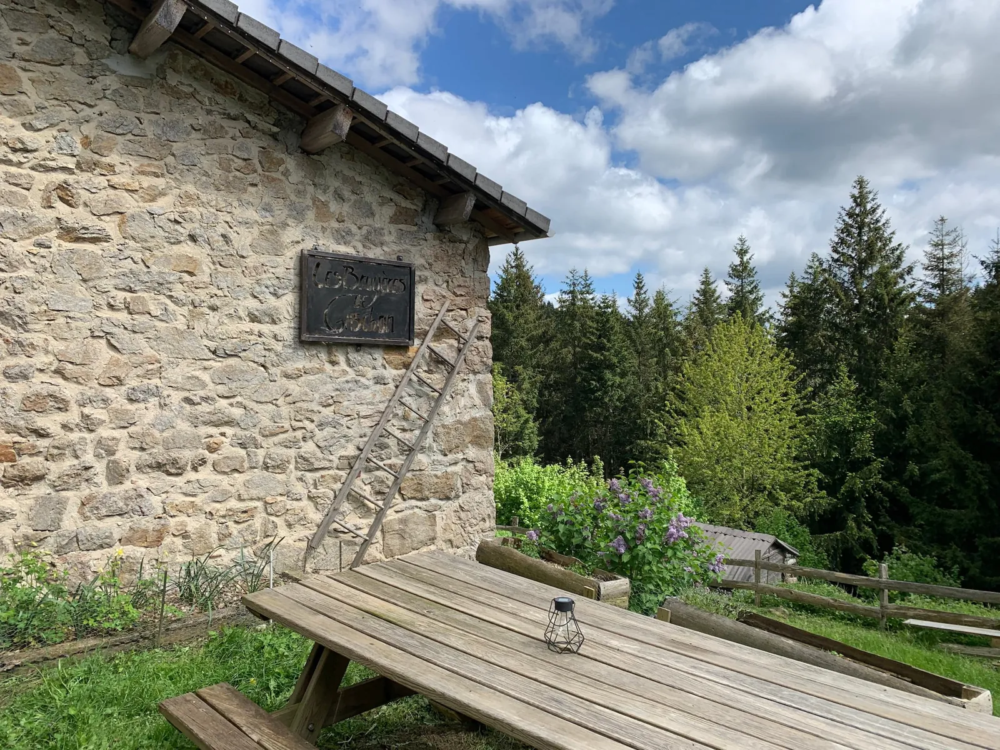
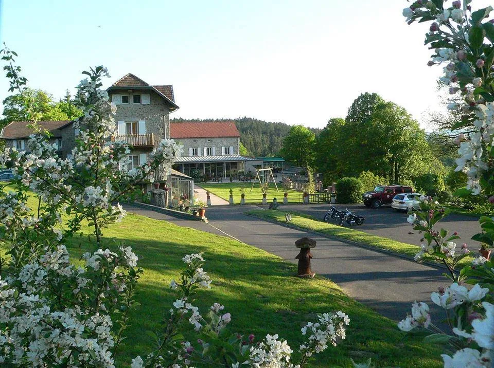

Should madame, monsieur wish to roll directly from the tasting menu to bed, only one key serves — N° 1, the four-star at the same compound, from €430 the night[8].
Should that key be hung, N° 2 — Le Clos des Cimes carries the Marcon name at a third of the price with the spa included, a seven-minute walk back to dinner[4].
Should the Marcon family be sold out entirely, N° 4 — Chambres Chatelard is the village's best independent fallback at €130, hammam included[9].
A note: reservations at the four-star open on a six-month rolling window the 1st of each month at 10h00. Lock the room before booking the table — the table is not the bottleneck. The ten keys are.[8]






The whole village fits inside a kilometre. The four-star sits at the eastern edge, on the Larsiallas compound; the three-star pair (Clos des Cimes and La Découverte) sits 500 m west, on chemin du Fanget. The bistrot and bar are on rue du Vivarais between them.[3]
Distinctive sleeps within a 30-min taxi — troglodyte rooms next door, yurts in the same hamlet, a heritage manor, plus fallbacks if the 3-star books out.
Half-day and full-day options: hikes, WWII memorial, hot-air-balloon history, steam train, safari park, cheese and markets.
Saint-Bonnet-le-Froid is a rural plateau — zero scheduled tech events for the rest of 2026. Closest sit 50–140 km away.